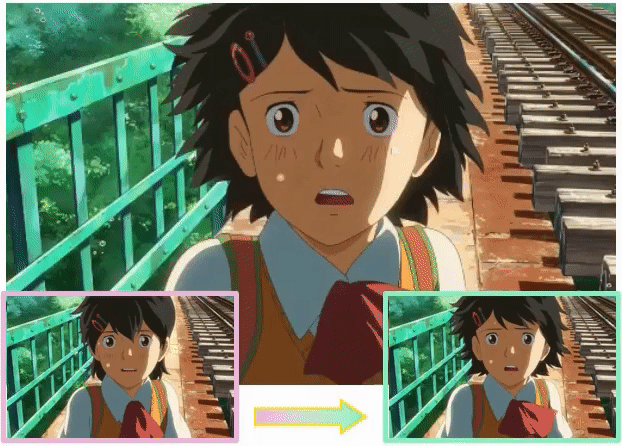
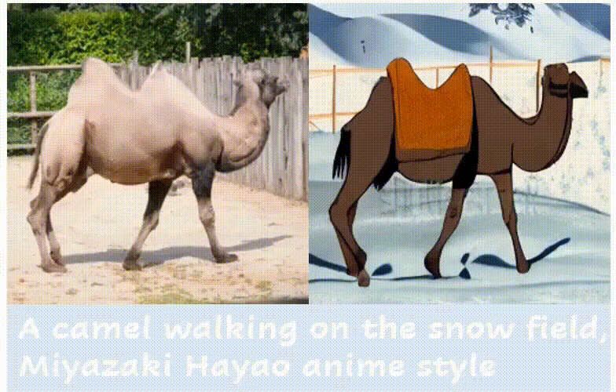
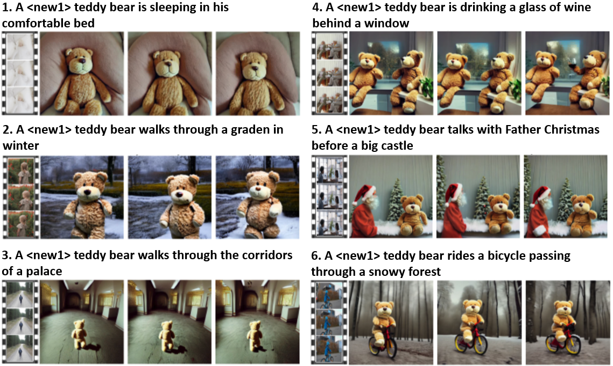
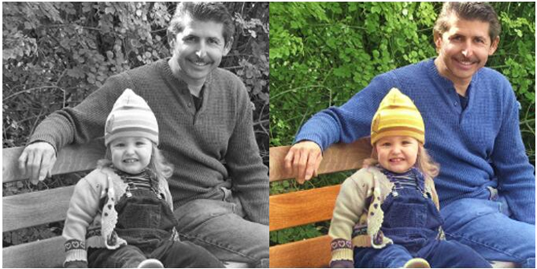
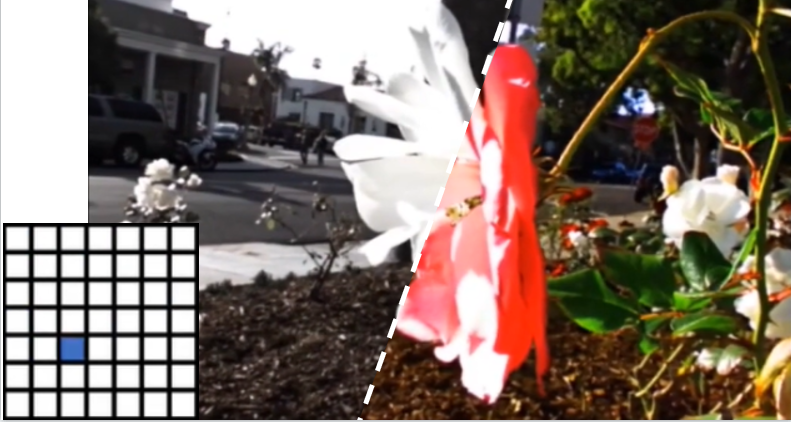
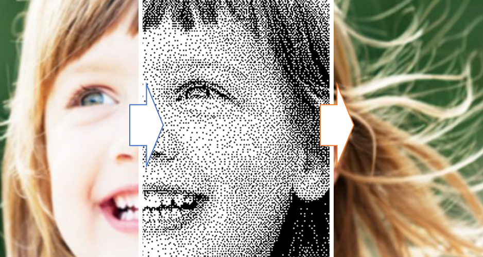
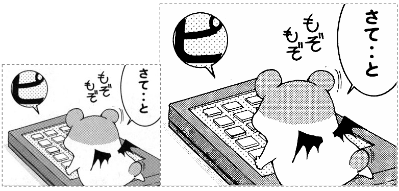
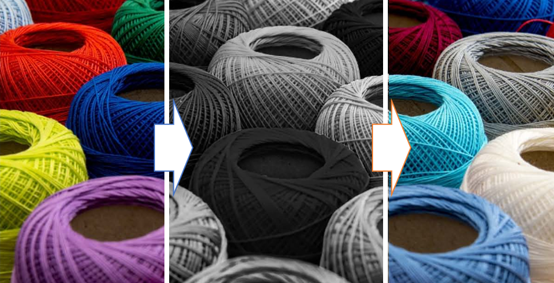
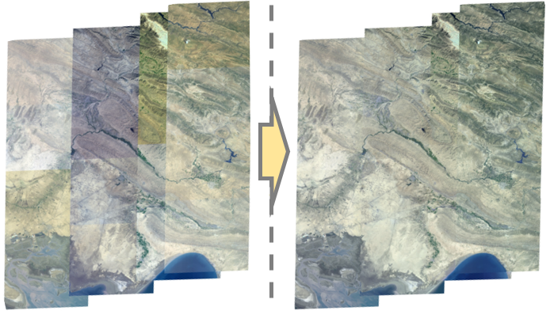
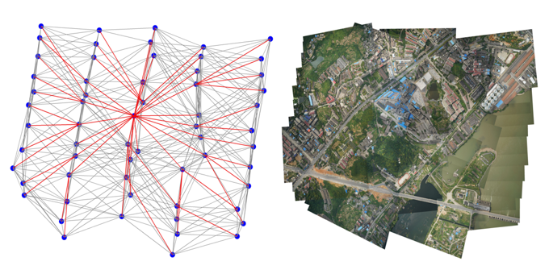

Google Scholar / Github
Email: menghanxyz@gmail.com
I am currently a Senior Researcher at Visual Generation Group (a.k.a. Kling Team), Kuaishou Technology. Previously I worked at Tencent AI Lab as a Senior Researcher during 2021~2024. I received my PhD in Computer Science and Engineering from The Chinese University of Hong Kong (CUHK) in 2021, supervised by Prof. Tien-Tsin Wong. Before that, I obtained a B.Eng. degree in Photogrammetry and Remote Sensing in 2014 and M.Eng. degree in Pattern Recognition and Intelligent System in 2017, both from Wuhan University, under the supervision of Prof. Jian Yao. During my doctoral studies, I collaborated with Adobe Research for a year, starting in March 2019, and completed a research internship at Microsoft Research Asia (MSRA) in the summer of 2021.
My research interest lies in Computer Vision and Deep Learning, especially image/video processing & generation. Currently I focus on visual generative foundation models (AIGC) and its conditional controllability.
Research Works
Representative •

ToonCrafter: Generative Cartoon Interpolation
Jinbo Xing, Hanyuan Liu, Menghan Xia†, Yong Zhang, Xintao Wang, Ying Shan, Tien-Tsin Wong
SIGGRAPH Asia (special issue of ACM Transactions on Graphics), 2024
Webpage •
Code •
Demo
StyleCrafter: Taming Artistic Video Diffusion with Reference-Augmented Adapter Learning
GongyeLiu, Menghan Xia†, Yong Zhang, Haoxin Chen, Jinbo Xing, Xintao Wang, Ying Shan, Yujiu Yang
SIGGRAPH Asia (special issue of ACM Transactions on Graphics), 2024
Webpage •
Code •
Demo
DynamiCrafter: Animating Open-Domain Images with Video Diffusion Priors
Jinbo Xing, Menghan Xia†, Yong Zhang, Haoxin Chen, Xintao Wang, Ying Shan, Tien-Tsin Wong
European Conference on Computer Vision (ECCV), 2024
Webpage •
Code •
Demo
FreeNoise: Tuning-Free Longer Video Diffusion via Noise Rescheduling
Haonan Qiu, Menghan Xia†, Yong Zhang, Yingqing He, Xintao Wang, Ying Shan, Ziwei Liu
International Conference on Learning Representations (ICLR), 2024
Webpage •
Code •
Demo

Make-Your-Video: Customized Video Generation Using Textual and Structural Guidance
Jinbo Xing, Menghan Xia†, Yuxin Liu, Yuechen Zhang, Yong Zhang, Yingqing He, Hanyuan Liu, Haoxin Chen, Xiaodong Cun, Xintao Wang, Ying Shan, Tien-Tsin Wong
IEEE Transactions on Visualization and Computer Graphics (TVCG), 2024 Early access
Webpage •
Code
VideoCrafter1: Open Diffusion Models for High-Quality Video Generation
Haoxin Chen*, Menghan Xia*, Yingqing He*, Yong Zhang*, Xiaodong Cun*, Shaoshu Yang, Jinbo Xing, Yaofang Liu, Qifeng Chen, Xintao Wang, Chao Weng, Ying Shan
preprint arXiv:2310.19512, 2023
Webpage •
Code •
Discord

Animate-A-Story: Storytelling with Retrieval-Augmented Video Generation
Yingqing He*, Menghan Xia*, Haoxin Chen*, Xiaodong Cun, Yuan Gong, Jinbo Xing, Yong Zhang, Xintao Wang, Chao Weng, Ying Shan, Qifeng Chen
European Conference on Computer Vision Workshops (ECCVW), 2024
Webpage •
Code

Jinbo Xing, Menghan Xia†, Yuechen Zhang, Xiaodong Cun, Jue Wang, Tien-Tsin Wong
IEEE Conference on Computer Vision and Pattern Recognition (CVPR), 2023
Webpage •
Code

Disentangled Image Colorization via Global Anchors
Menghan Xia, Wenbo Hu, Tien-Tsin Wong, Jue Wang
SIGGRAPH Asia (special issue of ACM Transactions on Graphics), 2022
Webpage •
Video •
Code •
Demo

LF2MV: Learning An Editable assets-View Towards Light Field Representation
Menghan Xia, Jose Echevarria, Minshan Xie, Tien-Tsin Wong
IEEE Transactions on Visualization and Computer Graphics (TVCG), 2022 Early access
Video •
Code

Deep Halftoning with Reversible Binary Pattern
Menghan Xia, Wenbo Hu, Xueting Liu, Tien-Tsin Wong
IEEE International Conference on Computer Vision (ICCV), 2021
Webpage •
Code •
Demo

Exploiting Aliasing for Manga Restoration
Minshan Xie*, Menghan Xia*, Tien-Tsin Wong
IEEE Conference on Computer Vision and Pattern Recognition (CVPR), 2021
Webpage •
Code

Invertible Grayscale
Menghan Xia, Xueting Liu, Tien-Tsin Wong
SIGGRAPH Asia (special issue of ACM Transactions on Graphics), 2018
Webpage •
Video •
Code

Color Consistency Correction Based on Remapping Optimization for Image Stitching
Menghan Xia, Jian Yao, Renping Xie, Mi Zhang, Jinsheng Xiao
IEEE International Conference on Computer Vision Workshops (ICCVW), 2017
Code •
Journal Extension [ISPRS]

Globally Consistent Alignment for Planar Mosaicking via Topology Analysis
Menghan Xia, Jian Yao, Renping Xie, Mi Zhang, Jinsheng Xiao
Pattern Recognition (PR), 66:239-252, 2017
Webpage •
Code
Academic Services
• Conference Review
-
International Joint Conference on Artificial Intelligence (IJCAI) 2020
ACM SIGGRAPH 2019,2023,2024
ACM SIGGRAPH Asia 2023, 2024
Pacific Graphic 2019,2023
Computer Graphics International 2019~2020
International Conference on Computer Vision and Pattern Recognition (CVPR) 2021~2024
International Conference on Computer Vision (ICCV) 2021,2023
European Conference on Computer Vision (ECCV) 2022
• Journal Review
-
IEEE Transactions on Pattern Analysis and Machine Intelligence (TPAMI)
IEEE Transaction on Image Processing (TIP)
IEEE Transaction on Multimedia (TMM)
Computer Graphics Forum (CGF)
The Visual Computer (TVC)